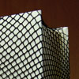
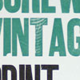
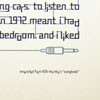

<!DOCTYPE html PUBLIC "-//W3C//DTD XHTML 1.0 Strict//EN" "http://www.w3.org/TR/xhtml1/DTD/xhtml1-strict.dtd">
<html xmlns="http://www.w3.org/1999/xhtml" xml:lang="en">

<head>

<meta http-equiv="content-type" content="text/html; charset=iso-8859-1" />
	<meta name="author" content="Kristian Bjornard @ ITEMPIMODERNI studios" />
	<meta name="keywords" content="kristian bjornard" />
	<meta name="description" content="Bjorn Means Bear, oh and i am norwegian" />

<title>...::: BJORN * MEANS * BEAR :::...</title>
<link rel="stylesheet" href="kb.css" type="text/css" />
<link rel="Shortcut Icon" type="image/x-icon" href="star.ico" />

<!-- thick box stuff [ if you also want to use thickbox, all you need to know is here: http://jquery.com/demo/thickbox/ ]-->

<script type="text/javascript" src="thickbox/jquery.js"></script>
<script type="text/javascript" src="thickbox/thickbox.js"></script>
<style type="text/css" media="all">@import "thickbox/thickbox.css";</style>

<!-- end TB stuff -->

</head>


<body>
<div id='container'>

	<!-- header -->
	<div id='header'></div>

	<!-- content and such -->
	<span class='space1'></span>
		<!--left side-->
		<div id='content'>
			<div class='entry-div'>
			<h1>Ten Goals for Spring 2008</h1>
				<p class='date'>[ tuesday, february 5, 2008 ]</p>
				<ul class='entry'>
					<li>
						1. Do a better job of upkeeping the music blog. Do not let all that work go to waste. Invest more time into album reviews & general site content & feel
					</li>
					<li>
						2. Personal work: put some more effort into upkeeping personal sites, portfolio, flickr, etc. Get everything organized and make online portfolio easy to browse, upkeep and get out to people.
					</li>					
					<li>
						3. Work for Spring show<br />
						- Art / Design conversations<br />
						- Music Lyric Illustration Posters
					</li>					
					<li>
						4. Explore ideas, writings and research about Sustainability & Graphic Design.
					</li>					
					<li>
						5. Finish designing and letterpressing new business cards (and probably letterheads) for myself.
					</li>					
					<li>
						6. Submit work to design annuals and competitions. It appears that most main annuals require submission in by sometime in March. How, AIGA, Print, etc.
					</li>					
					<li>
						7. Focus on maximizing time. Am I actually spending enough time on design?
					</li>					
					<li>
						8. Read more. More of everything, particularly about graphic design. Branding? Hierarchy? Grid?
					</li>					
					<li>
						9. What I will do for the summer? Contact those who may have freelance work, and try to find somewhere in B’more or DC to intern/work for summer.
					</li>					
					<li>
						10. Ideas for Electric Car. Can I design a control, battery and motor system on my own? Contact gentlemen with shop and junkyard from Biodiesel University.
					</li>
				</ul>
			</div>
			<div class='entry-div'>
			<h1>some work</h1>
				<p class='date'>[ tuesday, january 22, 2008 ]</p>
				<p class='entry'>
					This is just a sampling, eventually this will be a seperate entity from the text blog, but just make do for now.
				</p>
					<ul id='work'>
						<li>
							<a href="work/sl_fc1.jpg" title="Sexy Librarian, Book Cover, Dec 2007" class="thickbox" rel="work">
								
							</a> 
						</li>
						<li>
							<a href="work/buttons1.jpg" title="Letterpress Themed Buttons, Dec 2007" class="thickbox" rel="work">
								
							</a> 
						</li>
						<li>
							<a href="work/ip_fc1.jpg" title="Cover Concept, Dec 2007" class="thickbox" rel="work">
								
							</a> 
						</li>
						<li>
							<a href="work/eatexcrete1.jpg" title="Eat/Excrete, Nov 2007" class="thickbox" rel="work">
								
							</a> 
						</li>
						<li>
							<a href="work/vintage1.jpg" title="Print is the Future! Letterpressed Poster, Oct 2007" class="thickbox" rel="work">
								
							</a> 
						</li>
						<li>
							<a href="work/typeisdead1.jpg" title="Hand Set Type Is Dead, an Accordian book, Letterpress, Oct 2007" class="thickbox" rel="work">
								
							</a> 
						</li>
						<li>
							<a href="work/hp1.jpg" title="Pop Music, Letterpressed Poster, Sept 2007" class="thickbox" rel="work">
								
							</a> 
						</li>
						<li>
							
						</li>
						<li>
							
						</li>
					</ul>
			</div>
			<div class='entry-div'>
			<h1>Up and Running</h1>
				<p class='date'>[ tuesday, january 22, 2008 ]</p>
				<p class='entry'>
					Well it has been two years since I ever really did anything with this site, and now all my compatriots in the 
					MFA program have decided that they need blogs to show off their work and ideas, and now I will have one too. 
					yeeha. Today is just a start, set the page back up, clear out the old, in with the new. However, expect some 
					work very, very soon.
				</p>
			</div>
		</div>

		<!--right side-->
		<div id='right'>

			<!-- links and such -->
			<span id='links'></span>
			<div class='textleft' id='nav'>
				<ul>	
					<li><a class='linksbar' href='http://www.soundmachinedream.com'>me about music</a></li>
					<li><a class='linksbar' href='http://joegalbreath.com'>Joe Galbreath</a></li>
					<li><a class='linksbar' href='http://kelleymc.wordpress.com'>Kelley McIntyre</a></li>
					<li><a class='linksbar' href='http://kimbentley.wordpress.com/'>Kim Bentley</a></li>
					<li><a class='linksbar' href='http://tonyvenne.org/'>Tony Venne</a></li>
					<li><a class='linksbar' href='http://klunderground.blogspot.com'>karsten</a></li>
					<li><a class='linksbar' href='http://menningitis.net'>menningitis</a></li>
					<li><a class='linksbar' href='http://www.nikfinn.net'>nikki</a></li>
					<li><a class='linksbar' href='http://www.whatdoiknow.org'>what do i know</a></li>
					<li><a class='linksbar' href='http://www.zindrendesign.com'>zindren design</a></li>
					<li><a class='linksbar' href='http://www.itempimoderni.com'>i tempi moderni studios</a></li>
					<li><a class='linksbar' href='http://www.bjornmeansbear.com'>bjorn means bear music</a></li>
				</ul>
			</div>
			<span class='space2'></span>
			<!-- currently enjoying -->
			<span id='enjoy'></span>
			<div class='textleft' id='whatshot'>
				<ul>
					<li><strong>READING</strong></li>
					<li><ul class='sublist'>
							<li><em>Into The Wild</em></li>
							<li><em>Design Studies</em></li>
							<li><em>Grid Systems</em></li>
						</ul></li>
					<li><strong>LISTENING</strong></li>
					<li><ul class='sublist'>
							<li>Kate Nash, <em>Foundations</em></li>
							<li>Any old Rollings Stones</li>
							<li>Scandinavians: (Jens Lekmen, Thomas Dybdahl, Seabear, etc.)</li>
						</ul></li>
					<li><strong>WATCHING</strong></li>
					<li><ul class='sublist'>
							<li>Flight of the Conchords</li>
							<li>The Wire</li>
						</ul></li>
					<li><strong>THE REST</strong></li>
					<li><ul class='sublist'>
							<li>Coca Cola in 8 oz Glass Bottles</li>
							<li>Readstreet Books &amp; Coffee</li>
						</ul></li>
				</ul>
			</div>
			<span class='space2'></span>
			<!-- validation -->
			<span id='validate'></span>
			<div class='textleft' id='valid'>
			<a class='validlink' href="http://validator.w3.org/check/referer" title="Check the validity of this site&#8217;s XHTML">xhtml</a> 
			<a class='validlink' href="http://jigsaw.w3.org/css-validator/check/referer" title="Check the validity of this site&#8217;s CSS">css</a>
			</div>
		</div>
		<!-- ah, the very bottom -->
		<span class='space1'></span>
		<div id='bottom'></div>
</div>

<!-- google analytics script -->
<script src="http://www.google-analytics.com/urchin.js" type="text/javascript">
</script>
<script type="text/javascript">
_uacct = "UA-2225454-5";
urchinTracker();
</script>

</body>

</html>
